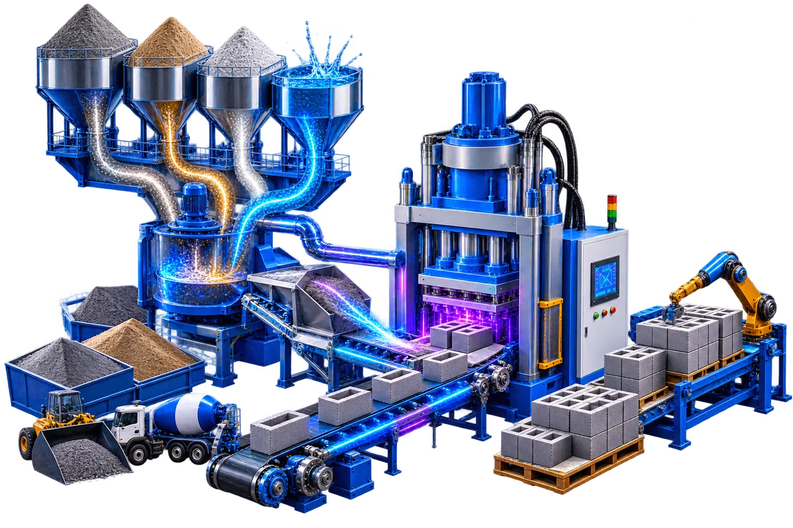

Fly ash bricks are an eco-friendly and cost-effective alternative to traditional clay bricks. Made from fly ash, a byproduct of coal combustion, these bricks are gaining popularity in the construction industry due to their durability, strength, and sustainability. In this guide, we'll walk you through the step-by-step process of how fly ash bricks are made.
High-quality fly ash, lime, gypsum, and water in precise proportions
Advanced machinery for mixing, molding, and curing
Sustainable process with minimal environmental impact
Fly ash bricks are construction materials made from fly ash, lime, gypsum, and water. They are known for their high compressive strength, thermal insulation, and environmental benefits. Unlike traditional clay bricks, fly ash bricks are cured at ambient temperatures, making them energy-efficient and sustainable.
To produce fly ash bricks, the following raw materials are needed:
Fly ash offers numerous advantages, making it a preferred material in construction and brick-making:
Fly ash is a key ingredient in the production of fly ash bricks due to its unique properties:
Fly ash bricks are manufactured using a simple yet efficient process:
Fly ash bricks are widely used in:
Using fly ash in brick production has a positive environmental impact:
Contact Jee Engineers today to learn more about our automated fly ash brick manufacturing machinery and setup solutions.